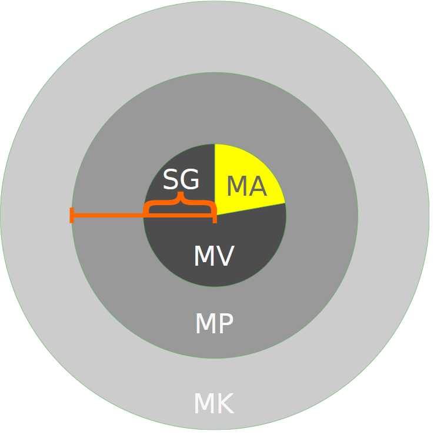

Marktziele und Marktforschung
Marktziele
- Welche Bedürfnisse der Nachfrager sollen befriedigt werden?
-
Auf welchen Märkten oder Marktsegmenten soll die Produktion abgesetzt werden?
Name Kriterium Beispiel Geografische Segmentation Ort Alle Kunden in der Schweiz Demografische Segmentation Einkommen, Alter, Geschlecht, Bildung, Haushaltsgrösse etc. Alle männlichen, 20 bis 30 Jahre alten Kunden, die einen Doktorabschluss haben. Segmentation nach Kundenverhalten Kundenverhalten Alle Kunden, die auf unserer Website schon nach Haustieraccessoirs gesucht haben. -
-
Marktpotential
(Maximales theoretisches Marktvolumen) -
Marktvolumen
(Umsatz oderabgesetzte Menge aller Anbieter) -
Marktanteil
(Umsatz oder abgesetzte Menge einer Unternehmung
im Vergleich zum Marktvolumen: Umsatz UG/Umsatz Markt) -
Marktsättigungsgrad
(Marktvolumen/Marktpotenzial)
 -
Marktpotential
Marktforschung
Die Marktforschung ist (im Unterschied zur Markterkundung) gezieltes, systematisches Vorgehen mit Wissenschaftlichen Methoden zur Erforschung des Marktes. Die Marktforschung erleichtert durch die gewonnenen Informationen dieZielsetzung (e.g. angestrebter Marktanteil basiert auf bisherigem Marktanteil).
| Man unterscheidet zwischen Field Research (auch: Primäre Marktforschung) und Desk Research (auch: Sekundäre Marktforschung).Beim Field Research werden neueInformationen gewonnen, zum Beispiel durchUmfragen, Gespräche mit Kunden, Lektüreetc. Beim Desk Research wird ausbestehenden Daten Erkenntnisse gewonnen.Dabei wird zwischen Unternehmungsinternenund Unternehmungsexternen Datenquellenunterschieden. |

|
|

|
Umsetzung Video / Beispiele
Bedürfnisse: Beispiele (e.g. Ein Anbieter für Privatflüge hoher Preisklasse -> Luxusbedürfnis)
Marktsegmentation: Beispiele (e.g. ein Deo für Jugendliche und junge Erwachsene)
Marktanteile und Umsatzvolumina:
- Marktpotenzial: Beispielrechnung (e.g. Jeder zehnte der 3 Mio. Haushalte inder Schweiz könnte einen Rasenmäher wollen, also Marktpotenzial 300'000Verkäufe)
- Marktvolumen: Beispiel Branchenstatistik
- Marktanteil: Formel(Unternehmensabsatz /Marktvolumen) und
Beispielrechnung:Apple 2018:50 Mio / 345 Mio =14.5% - Berechnung Marktsättigungsgrad →Beispielrechnung:
Angenommen, jeder 8. (ca. 1 Mrd) könnte und wolle nächstes Jahr ein neues Handy kaufen, ist der bisherige Marktsättigungsgrad:350 Mio. / 1 Mrd. = 35%
|
|

|
- Unterscheidung Markterkundung (e.g. Marktbesuch) und Marktforschung (e.g. Umfrage)
- Beispiel Field Research (e.g. Google Opinion Rewards)
- Beispiele Desk Research (Umfrage auswerten: Es besteht grosser Bedarf an einer Kampagne für digitale Sicherheit)
- Beispiele Untersuchungsobjekte (e.g. erwarten die Kunden Spenden aus dem Gewinn an gemeinnützige Organisationen?)